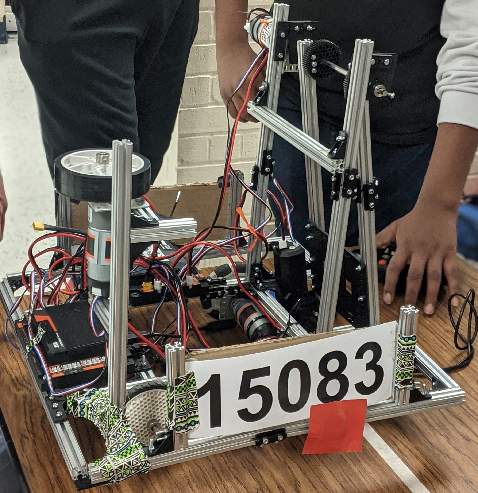
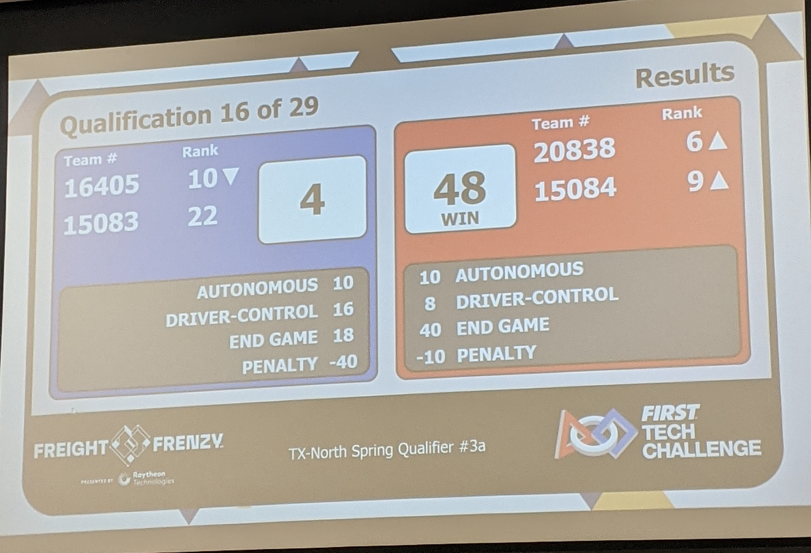
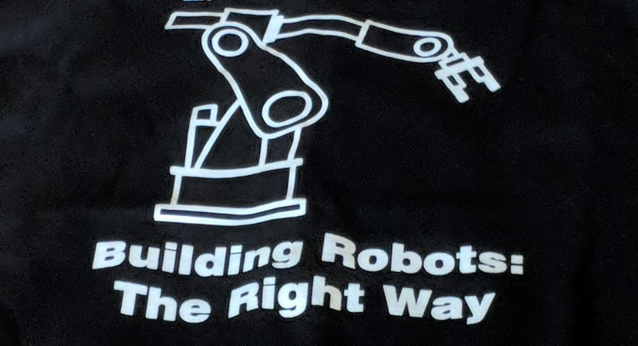

A week before the tournament
On January 29, 2022, during my freshman year in high school, I participated in my very first robotics competition at FIRST Tech Challenge. FIRST (For Inspiration and Recognition of Science and Technology) is a robotics community that equips young individuals for the future by offering a range of inclusive, team-based robotics programs. Its goal is to enable students to develop an engineering mindset and foster teamwork while designing, building, and programming robots to compete in alliance formats against other teams.
And In the week leading up to the tournament, my teammates and I dedicated our after-school time to practicing and improving our robot’s structure and coding.
A few hours before the tournament
I must admit that during the admissions and welcoming process before the competition, I was nervous and a bit shy, and some of my teammates felt the same way. Throughout this process, teams were allowed to practice before the tournament and showcase their ready-to-go robots. During those few hours, we practiced with other teams, continuously improving and modifying our robot’s strength and accuracy as we went along. Noting tips and tricks given to us from other teams as well as sharing our knowledge and analysis on other teams robot.

During the Tournament
In the course of the tournament, the MC took a moment to deliver a speech expressing his pride in the remarkable progress and growth of the robotics community. He acknowledged the collective effort and determination of all participants in the program and encouraged us to continue contributing towards its development.
After hearing that speech, my teammates and I no longer felt nervous and shy. Instead, we became excited and intrigued when we saw other really cool and impressive robots throughout the competition.
As the tournament continued, despite losing many matches and winning only a few, we persevered and never gave up. We learned from our mistakes and made the most of the little time we had to brainstorm and improve our robot once again.

At the end of the Tounrnament
We lost. Ranking second to last out of every other team. I felt a bit sad and disappointed of course but at the same time I also felt proud and excited to have gone though every match and obstacles with my teammates. A “win win” as our adult mentor said to us. And with that, I returned home eager to engage in discussions with my family about the experience. And greatly enthused to collaborate with my teammates to explore ways for enhancement, potential victories, and improved performance in the upcoming year.
